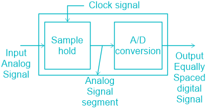
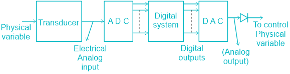
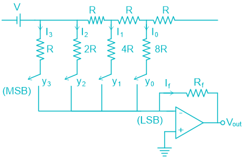
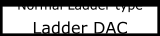
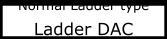
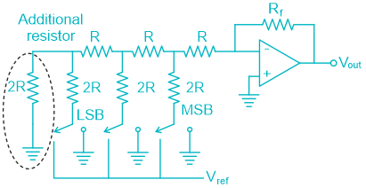
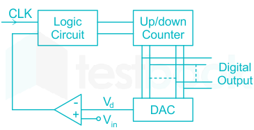

06 Adc & Dac
ADC & DAC Converters
Introduction
An electronic integrated circuit which converts a signal from analog (continuous & can take an infinity of values) to digital (discrete digital data) from. Provides a link between the analog world of transducers & the digital world of signal processing & data handling.

The process of converting an analog signal to a digital form involves the sequence of four processes.
(i) sampling (ii) Holding (iii) Quantizing (iv) Encoding ‘Sampling & holding’ operations are done simultaneously using a circuit referred to as an ‘Analog to digital Converter’ (A/D converter or ADC) The digital output has to be converted back to analog form referred as ‘Digital to Analog Converter’ (D/A Converter or DAC).

Digital to Analog (DAC) Converter
DAC is a device that converts digital signals into Analog signals. It accepts an ‘n’ bit digital input & generates a proportional analog output voltage. The analog output voltage V 0 of an N-bit straight binary D/A Converter is related to the digital input by the equation. 𝑛−1 𝑦 𝑛−1 + 2 𝑛−2 𝑦 𝑛−2 + … + 2𝑦 1 + 𝑦 0 ⎡⎢⎣ ⎤⎥⎦ 𝑉 0 = 𝐾2 Or V 0 = K[Decimal equivalent of digital input] Where, K = proportionality factor y n = 1; if the n th bit of input is ‘1’ y n = 0; if the n th bit of input is ‘0’
Resolution/Step size
It is defined as the change in the analog output voltage corresponding to a change of 1 unit at the digital input.
𝑉 𝐹𝑆 𝑅𝑒𝑠𝑜𝑙𝑢𝑡𝑖𝑜𝑛= 𝑛 −1 2 Where, V FS = full scale analog output voltage corresponding to digital input of all 1’s n = number of bits.
1 % 𝑅𝑒𝑠𝑜𝑙𝑢𝑡𝑖𝑜𝑛 = 𝑛 −1 ×100% 2
Analog output voltage = Resolution × Decimal equivalent of digital input i.e., A = RD
Types of D/A converters:
(1) Weighted Resistor DAC
This technique uses a resistor scaling and a common reference voltage.

(
) 𝐷. 𝐺
𝑉 Analog output voltage (V 0) = 𝑛−1 2 Where, D = decimal equivalent of digital input G = Gain of op-Amp Analog output voltage is proportional to the digital input. LSB resistance = (2 n-1) × MSB resistance. Typical value of resistance ‘R’ ranges from 2.5 kΩ to 10 kΩ.
Drawbacks:
The resistance used for LSB has very large value when no. of bits is large. Accuracy of system is less.
R-2R Ladder DAC
This technique uses voltage scaling & identical resistors.



Non-inverting OP-Amp Type Non-inverting OP-Amp type
R-2R Ladder DAC by using Non-inverting OP-Amp -
(
)
𝑛−1
(
)
(
)
𝑅 𝑓 𝑉 𝑟𝑒𝑓 𝑖 𝑏 𝑖 Output analog voltage (V 0) = 1 + ∑2 𝑛 𝑅 1 2 𝑖=0
R-2R Ladder DAC by using inverting OP-Amp -

The total resistance of the ladder network is R.
( )
𝑉 Analog output voltage (V 0) = D.G 𝑛 2 Where, −𝑅 𝑓 𝐺= 𝑅 1 +𝑅
Inverted R-2R Ladder DAC -

Output Analog output voltage (V 0)
(
)
𝑛−1
(
)
(
)
𝑅 𝑓 −𝑉 𝑟𝑒𝑓 𝑖 𝑏 𝑖 − ∑2 𝑛 𝑅 1 2 𝑖=0 The R-2R DAC has better linearity. It requires only two different type of resistor with value R & 2R
Application of D/A converter
Control Automatic testing Signal reconstruction A/D conversion
Analog to Digital Conversion (ADC)
It accepts an Analog input voltage & generates a proportional digital output.
Decimal equivalent of digital output = 𝐴𝑛𝑎𝑙𝑜𝑔 𝑖𝑛𝑝𝑢𝑡 𝑣𝑜𝑙𝑡𝑎𝑔𝑒 𝑅𝑒𝑠𝑜𝑙𝑢𝑡𝑖𝑜𝑛 𝐷= 𝐴 𝑅 An ADC process is basically a quantization process & ADC is always defined & design for a finite number of quantized analog voltage levels. If the analog input to an ADC falls in between two quantized analog voltage levels, then the digital output corresponds to either of the two quantized analog voltage levels. In either case, an error is associated in the conversion process. This error is known as
‘ Quantization Errors ’.
Types of ADC’s
The Counter type ADC

It uses linear search for conversion. Conversion time is not constant. It depends upon the magnitude of analog input. The maximum conversion time in counter type A/D converter (2 n – 1) T clk ≈2 n T clk. So, for every bit added conversion time doubles. DC voltage is proportional to digital output. The maximum conversion time depends on the number of bits. It uses DAC in the feedback path
Operation
The N bit counter generates an n bit digital output which is applied as an input to the DAC. The analog output corresponding to the digital input from DAC is compared with the input analog voltage using an op-amp comparator. The op-amp compares the two voltages and if the generated DAC voltage is less; it generates a high pulse to the N bit counter as a clock pulse to increment the counter. The same process will be repeated until the DAC output equals to the input analog voltage. If the DAC output voltage is equal to the input analog voltage, then it generates low clock pulse and it also generates a clear signal to the counter and load signal to the storage resistor to store the corresponding digital bits. These digital values are closely matched with the input analog values with small quantization error. For every sampling interval the DAC output follows a ramp fashion so that it is called as Digital ramp type ADC. And this ramp looks like stair cases for every sampling time so that it is also called as staircase approximation type ADC.
Advantages of Counter type ADC
Simple to understand and operate. Cost is less because of less complexity in design.
Disadvantages or limitations of Counter type of ADC
Speed is less because every time the counter has to start from ZERO. There may be clash or aliasing effect if the next input is sampled before completion of one operation.
NOTE -
Linear Search -It is a search that finds an element in the list by searching the element
sequentially until the element is found in the list.
Binary Search- It is a search that finds the middle element in the list recursively until the
middle element is matched with a searched element.
Counter type ADC is also known as Single slope ADC .
●
In place of ordinary counter, if UP/DOWN counter is used then it is called as Tracking
𝑛 −1)𝑇 𝑐𝑙𝑘 (2
Counter type ADC . Average conversion time =
2
Flash type ADC
It is the fastest ADC among all the ADC types. It uses multiple comparators to increase the speed of operation. Therefore, it is also known as simultaneous or parallel/comparator type ADC. A reference voltage divider generates equally spaced reference voltage levels. No clock pulse is required in this ADC. It produces the output instantaneously. Therefore, conversion time is not constant. Flash type ADC requires no counter An n-bit flash type ADC requires:
- 1. 2 n 1 comparators and 2 n registers.
- 2. One 2 n × n priority encoder.
Example :
3-bit flash ADC:
It uses 23 x 3 priority encoder. The following figure shows a 3-bit flash ADC circuit.
It is formed of a series of comparators, each one comparing the input signal to a unique reference voltage. The comparator outputs connect to the inputs of a priority encoder circuit, which then produces a binary output. V ref is a stable reference voltage provided by a precision voltage regulator as part of the converter circuit. As the analog input voltage exceeds the reference voltage at each comparator, the comparator outputs will sequentially saturate to a high state. The priority encoder generates a binary number based on the highest-order active input, ignoring all other active inputs.
Successive approximation type ADC
A successive-approximation ADC is a type of analog-to-digital converter that converts a continuous analog waveform into a discrete digital representation using a binary search through all possible quantization levels before finally converging upon a digital output for each analog voltage conversion. This ADC requires an internal DAC and also comparator The approach of this ADC is similar to measuring an unknown weight with a balance scale and a set of standard weights. For an N-bit successive approximation ADC, the conversion time is = N T Where, T is the time period of the clock pulse. Therefore, conversion time does not depend on the magnitude of the input voltage. The SAR ADC will use widely data acquisition techniques at sampling rates higher than 10 k Hz.
1 Aperture time = 𝑛 −1) ω(2 Ring counter is used to successively set the bits.

Advantages :
Speed is high compared to counter type ADC. Good ratio of speed to power. Compact design compared to Flash Type and it is inexpensive. SAR type ADC is mostly used in digital circuits to provide interfacing with microprocessor.
Disadvantage:
Cost is high because of SAR Complexity in design.
Single slope ADC
The simplest form of an integrating ADC uses a single-slope architecture. In this, an unknown input voltage is integrated and the value is compared against a known reference value. The time it takes for the integrator to trip the comparator is proportional to the unknown voltage. In this case, the known reference voltage must be stable and accurate to guarantee the accuracy of the measurement. Conversion time of single slope ADC is not constant. It depends upon the amplitude of the analog input voltage. If the analog input voltage falls in between the quantized analog voltage levels, then the digital output always corresponds to the smaller quantized analog voltage levels. The counter will be ON while discharging Principle:
- 1. Charging time (T 1) → V C ∝ | Vin |
- 2. Discharging time (T 2) → count goes down V C to zero
Dual slope ADC
In dual slope type ADC, the integrator generates two different ramps, one with the known analog input voltage VA and another with a known reference voltage –V ref. Hence, it is called a dual-slope A to D converter. The logic diagram for the same is shown below. The dual ramp output waveform is shown below:
The Output Voltage of Integrator is given by: 𝑉 0 𝑅𝐶 𝑉 𝑟𝑒𝑓 (𝑡−𝑇 1) 𝑉 0 = − 𝑇 0 + 𝑅𝐶 In dual-slope reference voltage count up to 2 N 1 and when input voltage V a is integrated the counter is allowed to count maximum up to 2 N – 1 Dual Slope ADC requires maximum conversion time i.e., 2 n+1 T clk It is mostly used in digital voltmeters & multi-meters. It is the most accurate ADC of all. It does not require internal DAC. In the dual-slope A/D converter, the leakage current of the capacitor can cause errors in the integration and consequentially, an error. These effects, in the dual-slope AID converter, will manifest themselves as a reading of the DVM when no input voltage is present. It is less sensitive towards noise, variation in power supply, temperature caused variations in circuit component values (R & C) The dual-slope is the slowest ADC These are used in the precision application. Noise present on the input voltage is reduced by averaging. The value of the capacitor and conversion clock does not affect conversion accuracy, since they act equivalently on the up-slope and down-slope. Its main disadvantage is of slow conversion rate and also due to the integration process during input hold time.